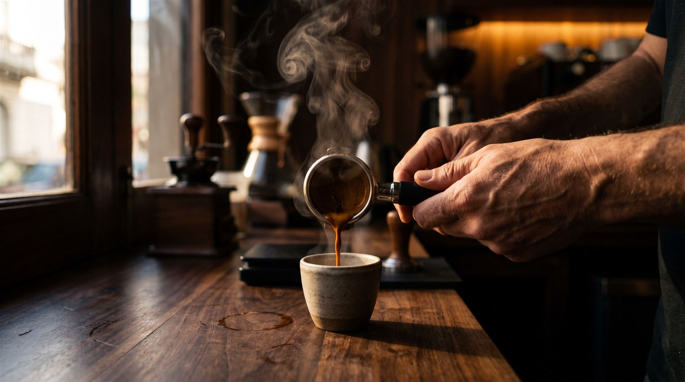
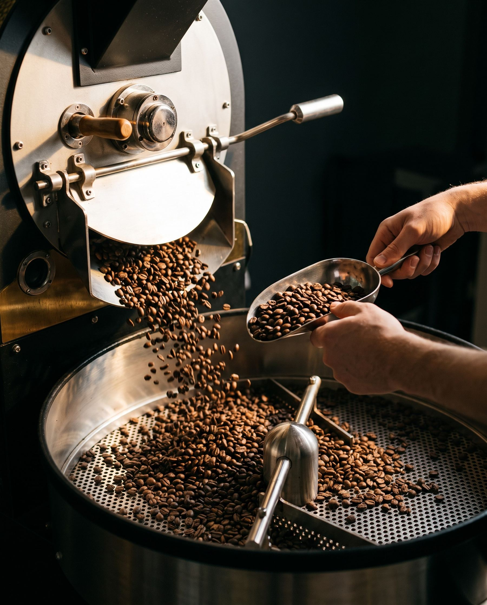
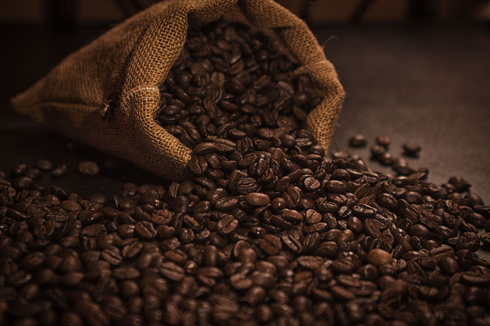
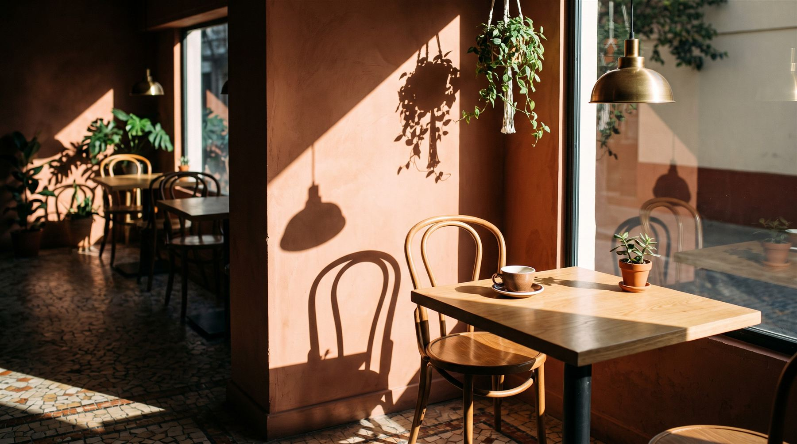
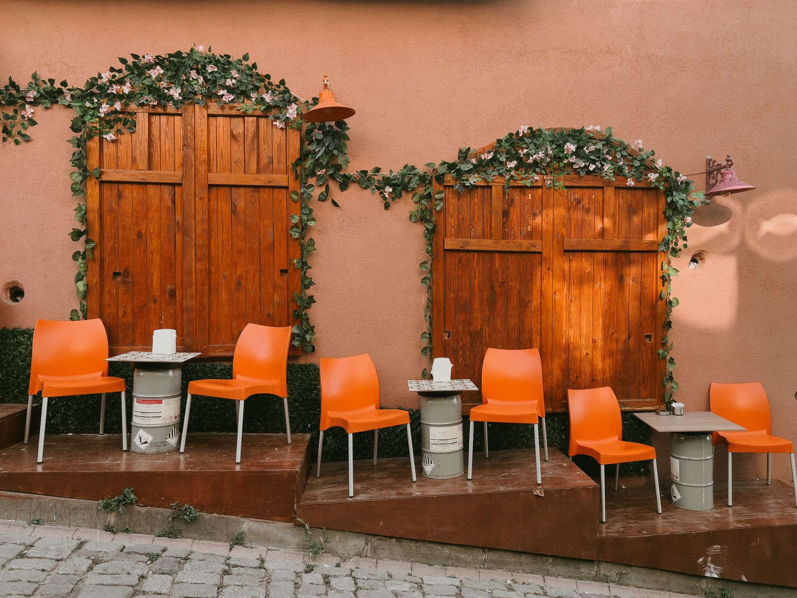

Café de tostadora propia, servido en Palermo.
Tostamos cada semana en Villa Crespo. El grano que llega a tu taza tiene menos de diez días.
Empezó con una tostadora usada y un garaje.
En 2016, Lucía Ferrer y Martín Aguirre compraron una tostadora de seis kilos en un remate y la instalaron en un garaje de Villa Crespo. Ella venía de trabajar en una cafetería de Medellín. Él había pasado diez años en logística de exportación. Tostaban de madrugada y repartían las bolsas en bicicleta a seis bares del barrio.
Los clientes empezaron a preguntar dónde podían tomar ese café ya preparado. En 2019 abrimos el local de Honduras, con la barra mirando a la ventana para que el que pasa vea cómo se hace.
Hoy somos doce personas. Seguimos tostando en el garaje, en lotes chicos, y probamos cada lote a ciegas antes de ponerlo a la venta.
-
2016
El garaje de Villa Crespo
Primeras tostadas de madrugada y seis clientes que recibían las bolsas en bici.
-
2019
Se abre Honduras 4850
Una barra, ocho mesas y la máquina de espresso frente a la ventana.
-
2023
Compra directa a productores
Dejamos los intermediarios y trabajamos con tres fincas que visitamos cada año.

Tres fincas, tres tazas distintas.
Cambiamos de lote según la cosecha. Estas son las tres que hoy están en la barra.

-
Huila, Colombia
Caramelo, naranja, cacao
Finca de Don Alirio Gómez, a 1.750 metros. Lavado, tueste medio. Es la base de nuestro espresso.
-
Guji, Etiopía
Durazno, jazmín, té negro
Cooperativa de pequeños productores. Natural, tueste claro. Lo servimos en filtrados.
-
Mogiana, Brasil
Avellana, chocolate, miel
Fazenda de familia en Minas Gerais. Tueste medio-oscuro, ideal para cafés con leche.

Mesas con sol de mañana.
Ocho mesas, una barra y una ventana grande sobre Honduras. Se puede venir a trabajar con la notebook o a quedarse con un libro. Hay enchufes en todas las mesas y la red se llama TerraCoffe.
- Wi-Fi
- Enchufes en las mesas
- Pet friendly
- Bicicletero
- Granos para llevar
Horarios
- Lunes a viernes
- 7:30 a 20:00
- Sábados y domingos
- 8:30 a 21:00

Pasá por Honduras.
Honduras 4850, PalermoCiudad Autónoma de Buenos Aires
A dos cuadras de la plaza Armenia y de la estación Plaza Italia del subte D.